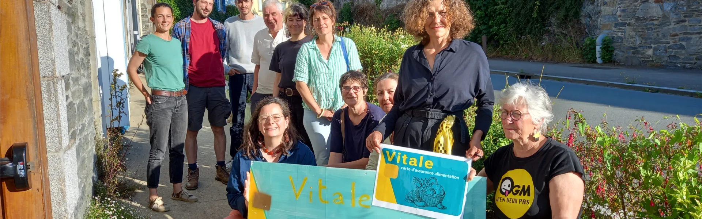
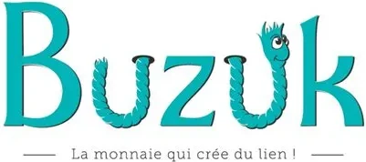
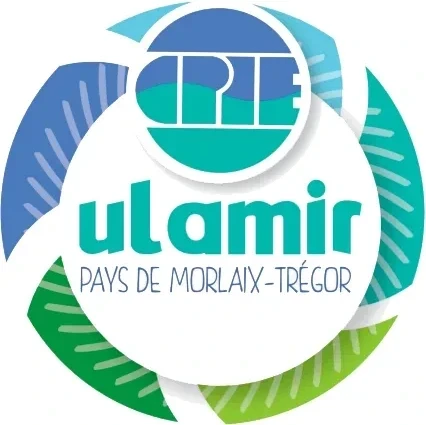
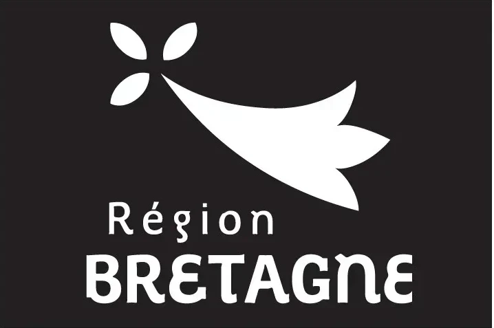

7déc.
Réunion mensuelle La Collective d'Animation
Lundi 7 décembre 2026, 18 h 00 · locaux de l'AFPA, bellevue de la Madeleine, Morlaix
Pour un droit fondamental et universel à une alimentation saine et durable.


7déc.
Lundi 7 décembre 2026, 18 h 00 · locaux de l'AFPA, bellevue de la Madeleine, Morlaix

Le groupe « Sécurité Sociale de l'Alimentation » (SSA). Le collectif pour une Sécurité Sociale de l'Alimentation en Pays de Morlaix est composé d'une trentaine de citoyennes et citoyens vivant sur le Pays de Morlaix. Il est accompagné par 4 structures associatives :






